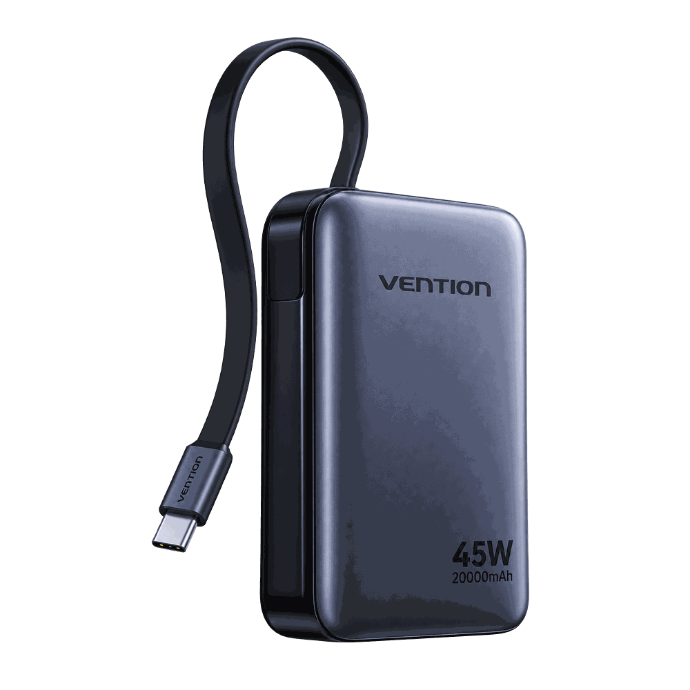
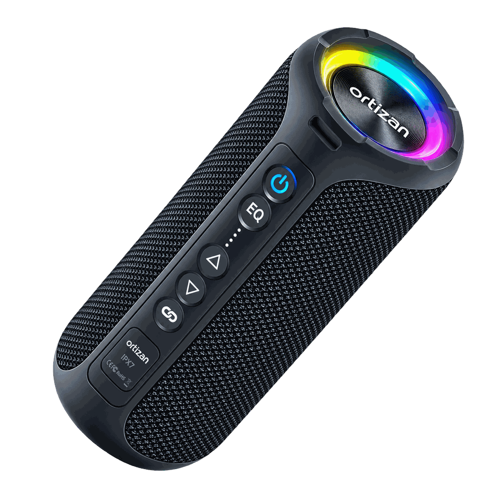

Bureau & Télétravail
Moniteur portable ARZOPA 16,1" 180Hz 2,5K
Moniteur portable ARZOPA 16 — sélectionné dans la catégorie Bureau & Télétravail.
146,39 €
Un bureau, même petit, devient plus agréable à utiliser avec quelques accessoires bien choisis. Voici une sélection d'objets pratiques qui peuvent améliorer le confort, l'organisation ou la qualité des appels et de l'image, à des prix généralement accessibles.
Un moniteur portable permet d'ajouter un second écran facilement, pour travailler à deux fenêtres ouvertes ou regarder une vidéo pendant une pause. Vérifiez la résolution, le taux de rafraîchissement et la compatibilité avec votre ordinateur avant d'acheter.
Un clavier et une souris Bluetooth libèrent de l'espace sur le bureau et se transportent facilement. Vérifiez la compatibilité avec votre appareil (Windows, Android, tablette) avant de commander.
Une batterie externe de bonne capacité dépanne pour recharger un ordinateur portable, une tablette ou un smartphone pendant la journée.
Pour les visioconférences ou l'enregistrement, un microphone externe améliore nettement la qualité sonore par rapport au micro intégré d'un ordinateur portable.
Une petite enceinte Bluetooth peut servir pour écouter de la musique en travaillant ou pour les appels en haut-parleur.
Moniteur portable ARZOPA 16 — sélectionné dans la catégorie Bureau & Télétravail.
 Petit budget-13%
Petit budget-13%
Clavier sans fil Bluetooth + souris — sélectionné dans la catégorie Bureau & Télétravail.

Populaire-26%Vention batterie externe 20000mAh 45W — sélectionné dans la catégorie Tech & Accessoires.
 Populaire-5%
Populaire-5%
FIFINE - Kit de microphone XLR dynamique avec HONArm — sélectionné dans la catégorie Bureau & Télétravail.

Populaire-9%Ortizan Enceinte Bluetooth 5.3 portable — sélectionné dans la catégorie Tech & Accessoires.
| Produit | Prix indicatif | Connexion | Idéal pour |
|---|---|---|---|
| Moniteur portable ARZOPA 16,1" 180Hz 2,5… | 146,39 € | USB-C / HDMI | Ajouter un second écran |
| Clavier sans fil Bluetooth + souris, uni… | 7,89 € | Bluetooth | Gagner de la place sur le bureau |
| Vention batterie externe 20000mAh 45W, c… | 23,79 € | USB-C | Ne jamais tomber à court de batterie |
| FIFINE - Kit de microphone XLR dynamique… | 64,69 € | XLR | Améliorer le son en visioconférence |
| Ortizan Enceinte Bluetooth 5.3 portable,… | 31,39 € | Bluetooth | Écouter de la musique ou passer des appels |
Ces accessoires peuvent améliorer le confort et l'organisation d'un bureau sans nécessiter un aménagement complet. Leur principale limite : la qualité perçue dépend beaucoup du modèle choisi, et un accessoire d'entrée de gamme peut sembler moins robuste qu'un équivalent premium.
Il n'est pas nécessaire de tout changer pour améliorer un bureau. Un ou deux accessoires bien choisis, adaptés à votre usage réel (visioconférence, multitâche, mobilité), suffisent souvent à faire une vraie différence au quotidien.
Ce guide reflète une analyse basée sur les caractéristiques annoncées par les vendeurs et les informations disponibles au moment de la rédaction. Certains liens vers des produits sont des liens affiliés AliExpress : Clicly peut recevoir une commission sans coût supplémentaire pour vous. En savoir plus.